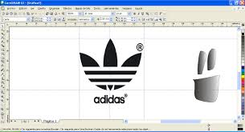
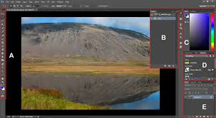
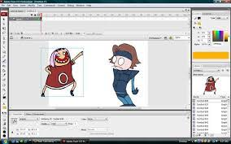
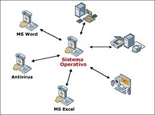
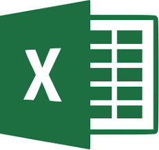
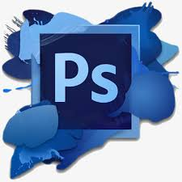
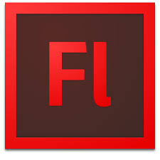

28/03/19
CAPACITACIÓN DE INFORMATICA:
PROPÓSITO:
Proporcionar al estudiante una serie de conocimientos, habilidades y actitudes del campo especifico de la informatica.La informática nos sirve para controlar de una manera más eficiente los sistemas informáticos y ponerlos al servicio del bienestar general de los seres humanos.
ALGUNOS TRABAJOS:
  
OPERAR EL EQUIPO DE COMPUTO, PRESERVANDO LOS INSUMOS, INFORMACION Y LUGAR DE TRABAJO.
Representa las funciones básicas del sistema operativo, como por ejemplo, la gestión de la memoria, de los procesos, etc.

Una hoja de cálculo sirve para trabajar con números de forma sencilla e intuitiva. Para ello se utiliza una cuadrícula donde en cada celda de la cuadrícula se pueden introducir números, letras y gráficos.

Microsoft Word ofrece creación de documentos y procesamiento de palabras superior.
Es el nombre popular de un programa informático de edición de imágenes. Su nombre completo es Adobe Photoshop y está desarrollado por la empresa Adobe Systems Incorporated.

Es una aplicación informática de diseño gráfico vectorial, es decir, que usa fórmulas matemáticas en su contenido.
Aplicación en forma de estudio de animación que trabaja sobre "fotogramas", destinado a la producción y entrega de contenido interactivo para las diferentes audiencias alrededor del mundo sin importar la plataforma.

Es la herramienta de diseño de páginas web más avanzada, tal como se ha afirmado en muchos medios. Aunque sea un experto programador de HTML el usuario que lo maneje, siempre se encontrarán en este programa razones para utilizarlo, sobretodo en lo que a productividad se refiere.